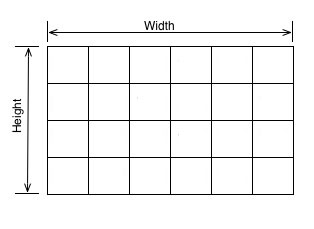
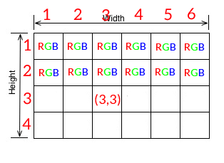
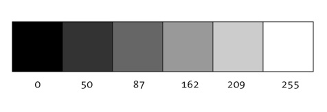
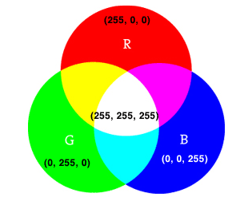

What is a Digital Image?
A digital image is an expressed array of numeric values that represent light intensity. An image is made up of rows and columns of pixels. In a color image, each pixel is assigned a color. In the RGB color space, each pixel color has three values: red, green, and blue, which represent light intensity recorded at each area of the image. Each pixel is a numerical representation of light data that was recorded by the image sensor. This data can be manipulated and expressed in a variety of ways.
ExploreAn array is a grid of stored values.

Think of it like cubbies. An array is a 2-dimensional storage system, meaning that it has both rows and columns. Each square holds a pixel value.
Each Pixel has an index location.

The pixel location is based on horizontal and vertical location, just like an (x,y) pair on the coordinate plane.
Each pixel has an RGB value.

The pixel value records the intensity of light recorded at that location in the image. The value is recorded as an RGB triple: (R, G, B), with each value representing the red, green and blue components of the incoming light, respectively.
Light intensity ranges from 0-255
0 (the absense of light) is the darkest possible value. 255 is the maximum amount of light. In a greyscale example, 0 is black, 255 is white, and the numbers in between are varying shades of grey.
play with greyscale values!**?
Intensity values range between 0 and 255 for a total of 256 possible values. Why 256? Pixel information is stored in bits. 8 bits of storage provides 2^8 = 256 possible options. ** look at text for more thorough explanation?
RGB Values
RGB values still range from 0 - 255. However, now there are three values per pixel rather than just one: red, green and blue. Each pixel can have any combination of red, green and blue within this range, producing the spectrum of colors below.


RGB is additive color, menaing that the sum of all colors at full intensity is white. Absence of color is black.
Play with the sliders below to make your own RGB colors!
RGB and the Human Visual System
"The choice of primary colors is related to the physiology of the human eye; good primaries are stimuli that maximize the difference between the responses of the cone cells of the human retina to light of different wavelengths, and that thereby make a large color triangle.[3]"-- wikipedia

Image Data and Manipulation
When an image is recorded, RAW pixel data is captured by the sensor. This data must be synthesized and quantized. This is where image compression comes in. In order to simulate how our eyes process environmental light, cameras and editors alter image data. Image tones may be pulled into a certain range. A pleasing S-Curve may be applied to the image tones to increase contrast, for example.
Got it. Next!
Digital image manipulations
Common manipulations include brightness, contrast, exposure, sharpness, clarity, saturation, vibrance, warmth
Why do we adjust these values? What do they do psychologically?
How is a Digtal Image Created?
A digital camera contains a sensor that records incoming light.

Digital Manipulations
Edge Detection/ Sharpness
Div 2
Div 3
Extension + Application
As society continues progressing, inventing new technologies and acquiring more and more knowledge, it is more important than ever to encourage interdisciplinary cooperation and exploration. Diciplinary specialization is absolutely necessary: many of our greatest achievements would not have been possible without great scientists devoting their lives to one area. However, we must not forget the interdisciplinary tradition of the ancient Greeks: Plato was a mathematician and philosopher. Even today, some of our greatest achievements have come in the space between disciplines: ___ applied ____ and ______ to create ______.
Additionally, one discipline can be a great introduction into another. For example, this visually-based project is an experiment in using art and interaction to get people excited about science. Moving forward, this could turn into a new way to get young children (especially young girls) excited about STEM majors. There is a gender gap [] in STEM majors, as well as a projected shortage of STEM majors. In combining disciplines we can approach the fields of science and technology from the fields they impact and inform: by beginning with the end product of STEM innovation, we can get students excited about pursuing STEM.